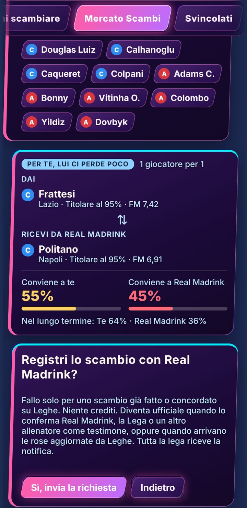
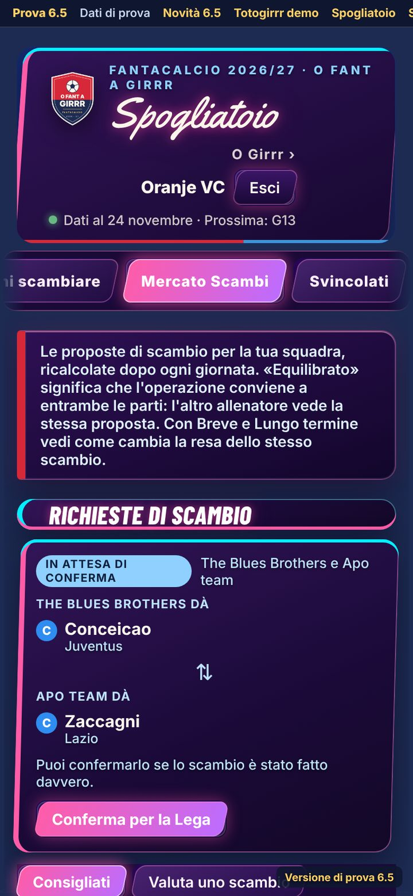
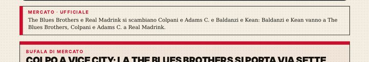
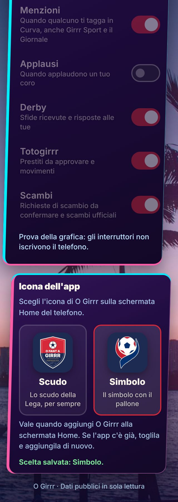
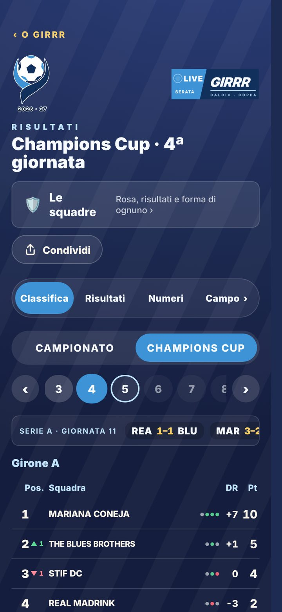

Spogliatoio › Mercato Scambi › Valuta uno scambioEffettua lo scambio

Dopo aver scelto i giocatori, se lo scambio è valido (stesso numero e stessi ruoli da tutte e due le parti, niente crediti) compare «Effettua lo scambio». Un secondo tocco lo conferma e diventa una richiesta per tutta la lega.
Spogliatoio › Mercato ScambiRichieste di scambio

In cima a Mercato Scambi le richieste in attesa. L'altra squadra conferma o rifiuta; la Lega (Oranje VC) o un altro allenatore entrato con il suo codice può confermarla come testimone; chi l'ha proposta può annullarla. Vale la prima conferma, anche quella automatica quando le rose da Leghe risultano già scambiate. Nel Lab è simulato: c'è già una richiesta di esempio tra due altre squadre.
Curva · Radio · GiornaleLo scambio ufficiale si racconta

Appena lo scambio è ufficiale le rose del sito e la classifica delle rose si aggiornano (entro 5 minuti), la Lega lo annuncia in Curva con il commento di Ciro Trattativa, Ciro lo racconta nella puntata della giornata dopo e il Giornale ha il riquadro «Mercato · Ufficiale» a pagina 3.
NotificheNotifiche degli scambi e icona dell'app

Richieste e scambi ufficiali arrivano a tutta la lega, con il filtro «Scambi» e la voce «Scambi» per il telefono (tocchi la notifica e si apre la richiesta). Nuovo riquadro «Icona dell'app»: scudo o simbolo. L'icona si fissa quando si aggiunge l'app: per cambiarla si toglie e si riaggiunge.
Tutte le pagine › LoghiScudi per sempre, simboli della stagione

Gli scudi della Lega (SINCE 2020 · 21) e della Champions Cup (SINCE 2025 · 26) nelle pagine di sempre: Home, Albo, Derby, Rivalità, Versioni, Notifiche. I simboli con il pallone e «2026 · 27» nelle pagine della stagione: Tabellone, Squadre, Statistiche, Giornale, Campo, Totogirrr.